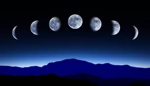
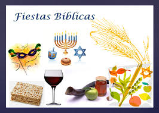
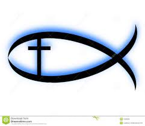
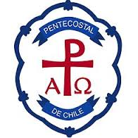
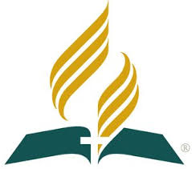
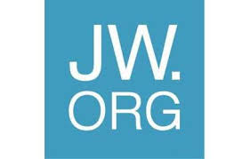

Fecha en la que sera Semana Santa
¿Como saber cuando sera Semana Santa?

El pueblo judío celebraba la fiesta de pascua en recuerdo de la liberación de la esclavitud de Egipto, el día de la primera luna llena de primavera. Esta fecha la fijaban en base al año lunar y no al año solar de nuestro calendario moderno. Es por esta razón que cada año la Semana Santa cambia de día, pues se le hace coincidir con la luna llena.

En la fiesta de la Pascua, los judíos se reunían a comer cordero asado y ensaladas de hierbas amargas, recitar bendiciones y cantar salmos. Brindaban por la liberación de la esclavitud. Jesús es el nuevo cordero pascual que nos trae la nueva liberación, del pecado y de la muerte.
Aplicacion Dos, JARE
Otras Relegiones que Celebran Semana Santa
Los Cristianos

Para los miembros de la iglesia cristiana evangélica, la Semana Santa es el tiempo para recordar la muerte de Cristo. Para conmemorarla, se congregan en una jornada de oración y adoración, la cual inicia el Jueves Santo a las 9:00 de la noche y se extiende por 24 horas. En esta reunión se dan cita grupos artísticos y musicales, ya que los cristianos creen que “Dios habita en medio de la alabanza”. Además, para ellos es fundamental la vigilia, es decir, pasar una noche en vela y adorando a Dios.
Los Pentecostales

La celebración de la Semana Santa para los pentecostales inicia el jueves a las dos de la tarde con un desfile, en el cual reparten volantes, entonan canciones e invitan a toda la comunidad a congregarse en una reunión que tiene lugar en su centro de culto a las seis de la tarde. Una vez allí en el templo, dan apertura a la fiesta denominada ‘Levántate, hoy es el día de tu salvación’. En este acto se efectúan bautizos, y llevan a cabo cuatro cultos o reuniones especiales.
Los Adventistas

En el sentir de los adventistas, la Semana Santa es la conmemoración de la pasión de Cristo; sin embargo, los seis días los trabajan normalmente, además, no tienen prohibición para ingerir alimentos, aunque tienden a ser vegetarianos. Para los adventistas, “las estaciones del vía crucis son 14 crucecitas de madera, pegadas a las paredes de una iglesia. Los 14 cuadros representan varias escenas de la vida de Cristo camino al calvario que no son estrictamente necesarias. Fueron los franciscanos quienes iniciaron la devoción del vía crucis en Italia cerca al año 1350″, complementó.
Los Testigos de Jehová

Los Testigos de Jehová consideran que la Semana Mayor es una fecha común; ellos celebran anualmente la muerte de Jesús, pero lo hacen según el calendario arameo. En dicha reunión comparten vino y pan, tal como lo hizo el Señor en la última cena. “Nosotros celebramos la muerte de Jesús con una cena, cada año la fecha puede variar dependiendo del calendario arameo.
Aplicacion Uno, JARE